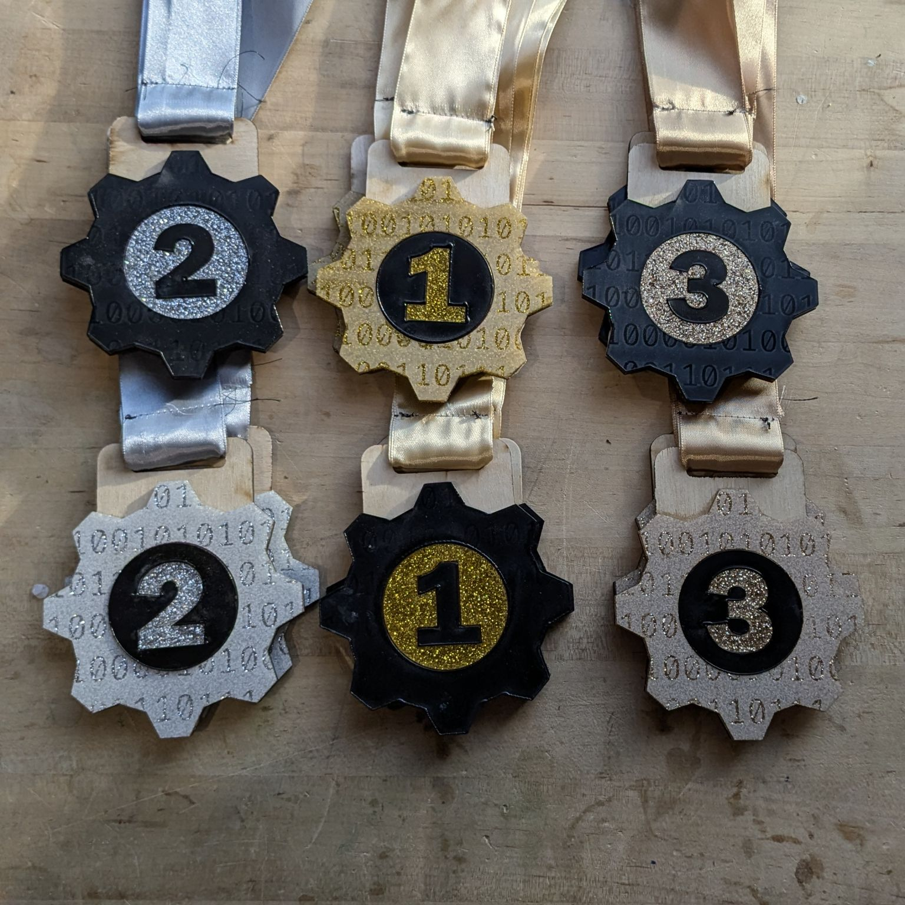
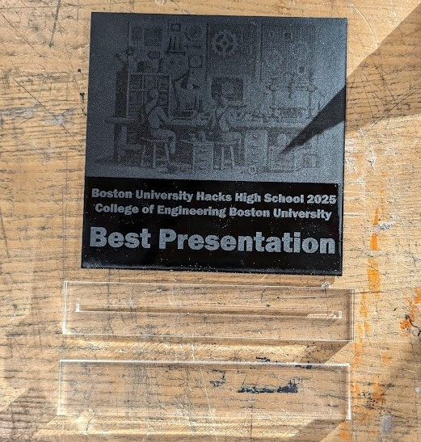
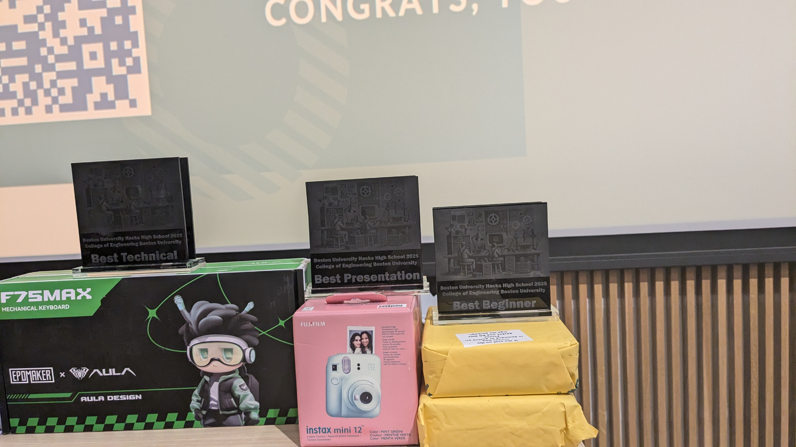
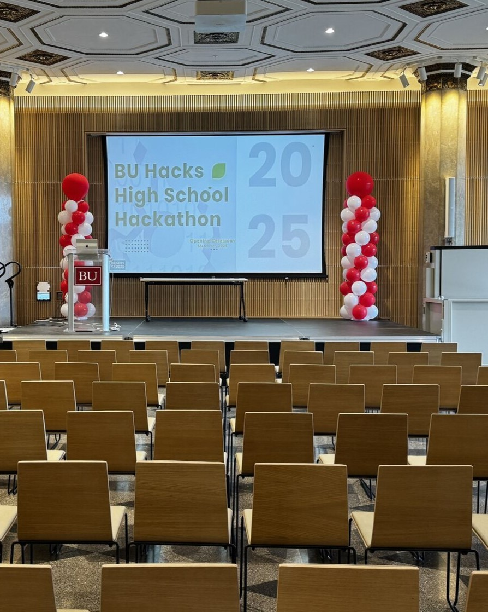
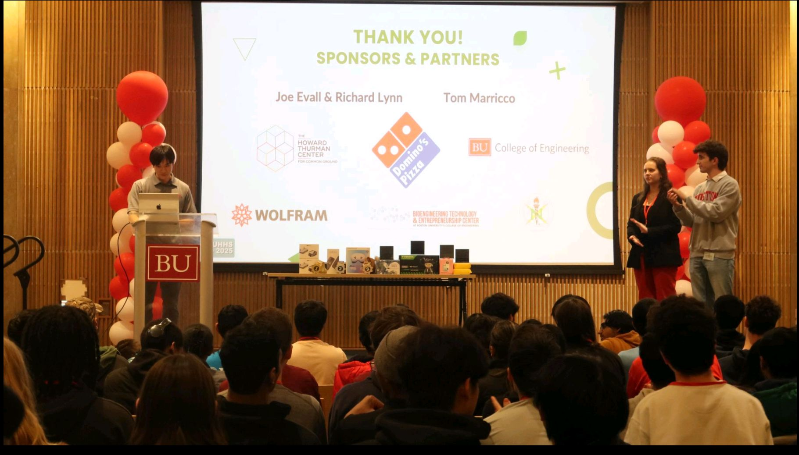

Project Overview

As a retired athlete, I cannot emphasize enough how prizes, medals, and trophies are a vital part of any competition, serving as lifelong souvenirs and a source of inspiration for the recipients. It was my honor to design, build and then award the winners of the 2025 BUHHS. First, second and third placements each got a medal, while recipients of special award categories like Best Beginner, Best Technical, Best Presentation and Most Creative got trophies. The balloon towers were seven feet tall and created a festive atmosphere on stage for all the speeches and panels that happened during the event.
Below you can see a close up of the Medals, Trophies and the Balloon Towers.
   These awards for the Boston University Hacks High School (BUHHS) was selected for funding by the Engineering Student Innovation Fund (ESIF)! A funding level of $300 was used to buy the supplies for medals, trophies and balloon towers, which were all built in the Singh Imagineering Lab (SiLab) and Bioengineering Technology & Entrepreneurship Center (BTEC).
For more details on this hackathon, refer to this BU Today article.